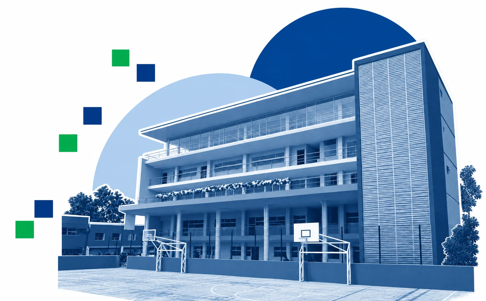

XIII Foro de divulgación científica enCiencias de
la Computación
- fecha
- y de noviembre, 2026
- inicio
- UTC−6
- sede
- Facultad de Estadística e InformáticaXalapa, Veracruz

[ cuenta regresiva ]
Inauguración · 12 de noviembre · 09:00 h · Veracruz
00días
00horas
00minutos
00segundos